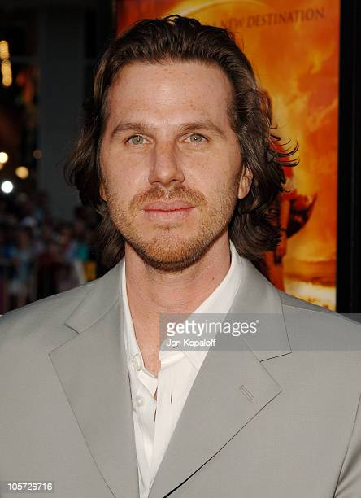
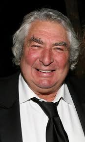
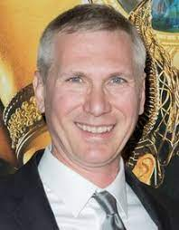

Amaldiçoado com a imortalidade, o caçador de bruxas Kaulder é obrigado a enfrentar mais uma vez sua maior inimiga e unir forças com a jovem bruxa Chloe para impedir que uma convenção espalhe uma terrível praga pela cidade.
Lançado em 2015 "O Ultimo Caçador de Bruxas" conta como protagonistas Vin Diesel e Rose Leslie o filme conta com um orçamento de US$ 90 milhões e arrecadou um total de US$ 147 milhões de bilheteria global o filme se pagou mas não foi um sucesso capaz de garantir o começo de uma franquia
Equipe tecnica
DIRETOR
Breck Eisner

Foto do diretor Breck Eisner
Atividade: Diretor de Cinema e Televisao
Nome de nascimento: Michael Breckenridge Eisner
Nacionalidade: Americano
Nascimento: 24 de dezembro de 1970
Idade: 51 anos
CINEGRAFISTA
Dean Semler

Foto do cinegrafista Dean Semler
Atividade: Diretor de Cinema e Televisao
Nome de nascimento: Dean William Semler
Nacionalidade: Australiano
Nascimento: 26 de maio de 1943
Idade: 79 anos
ROTERISTAS
Matt Sazama

Foto do roterista Matt Sazama
Atividade: Produtor de Cinema e Televisao, Roterista